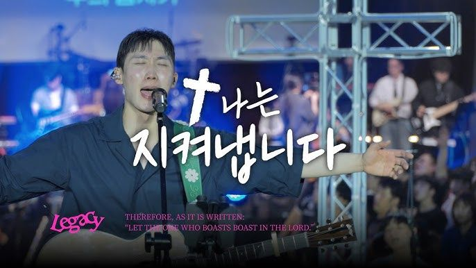
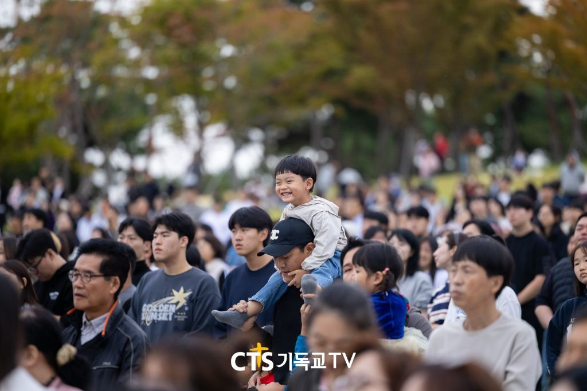
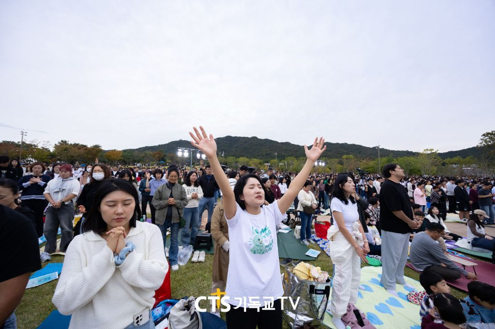

01 · GATHER
함께 모여
교회와 세대의 벽을 넘어 하나의 공동체로
토요일 저녁, 전북의 모든 세대와 교회가 한자리에 모여 같은 노래를 부르고 같은 고백을 드리는 두 시간. 그 예배의 자리에 당신을 초대합니다.
교회와 세대의 벽을 넘어 하나로 모이고, 피아워십과 한목소리로 찬양하며, 선포된 말씀 앞에 다시 섭니다.
교회와 세대의 벽을 넘어 하나의 공동체로

피아워십과 회중이 한목소리로 호흡하는 찬양
말씀 앞에 다시 서서 회복을 구하는 시간
“Faith In Action” — 행동하는 믿음
F.I.A는 FAITH IN ACTION의 줄임말로 ‘행동하는 믿음’을 의미합니다. 매주 목요 정기 예배를 드리며, 특정 세대가 아닌 전 세대의 예배자들이 모여 하나님을 찬양합니다. 예배를 넘어 앨범·선교·대학 캠퍼스 사역으로 다음 세대를 섬기고 있습니다.

LEGACY · Live나는 지켜냅니다YouTube에서 듣기


피아워십과 함께 손을 들고 찬양했던 그 자리.
이제 그 찬양이 전주에서 이어집니다.







Photo · CTS 기독교TV · FIA WORSHIP
2026. 11. 21 (토) 저녁 7시
입장과 사전 찬양은 저녁 6시부터 시작됩니다.
※ 세부 순서는 준비 상황에 따라 변경될 수 있습니다.
별도의 신청이나 입장권 없이, 당일 오시면 됩니다.
입장과 사전 찬양은 저녁 6시부터, 예배는 7시에 시작합니다.
도착한 순서대로 입장합니다. 성전 수용 인원을 넘으면 입장이 제한될 수 있습니다.
사전 신청이나 입장권 없이 누구나 오실 수 있습니다.
쾌적한 예배를 위해 현장에서 드리는 생수 외 음식물 반입은 제한됩니다.
교회 주차 공간이 협소합니다. 대중교통이나 카풀 이용을 부탁드립니다.
대형버스 등 단체 차량으로 오시는 교회는 교회 사무실로 미리 알려 주세요.
전주역이나 전주고속버스터미널에서 시내버스 또는 택시를 이용해 주세요.
더 궁금한 점은 전주시온성교회 사무실(063-252-6016)로 문의해 주세요.